UDN
Search public documentation:
EmittersExamplesJP
English Translation
Interested in the Unreal Engine?
Visit the Unreal Technology site.
Looking for jobs and company info?
Check out the Epic games site.
Questions about support via UDN?
Contact the UDN Staff
Interested in the Unreal Engine?
Visit the Unreal Technology site.
Looking for jobs and company info?
Check out the Epic games site.
Questions about support via UDN?
Contact the UDN Staff
エミッタ (用例)
本書の概要: UDNビルドでないものを使って様々な効果を生み出す方法を示した、エミッタのテュートリアル｡ 本書の変更記録: Michiel Hendriks により最終変更｡v3323のために情報を追加｡前回は Lode Vandevenne (Main.UdnStaff) により、ビルド861のために更新｡原作者 Lode Vandevenne (Main.UdnStaff) 注: この文書に添付されているのは古いバージョンのマップ用例です｡ほとんどのマップは v3323 でも使用出来ますが、いくつかのものは(PT-Break 、 PR-Storm 、 PT-Weird ) 最新のコード ドロップではロードしません｡これは、下記の用例は v3323 では作動しないということではありません｡
はじめに
このテュートリアルは EmittersReference (エミッタ参照) への追加分で、マップによる用例を詳しく説明しています｡各用例マップにはひとつまたはそれ以上のエミッタがあり、パーティクル システムの可能性を紹介しています｡マップは出来るだけ簡素に保たれており、すべてのテクスチャ、サウンドおよび静的メッシュは MyLevel (マイレベル) パッケージに保存されています｡そのため、Epic のデモ コンテンツをインストールしていない場合でもマップを開くことが出来ます｡ マップをダウンロードするためのリンクはこのページの一番下にあります｡ UnrealEngine の異なるバージョンのマップが利用できます｡ 詳細を記した中に、紹介する効果をエミッタで作成するために修正されたプロパティのリストがあり、コメントとスクリーンショットでも説明されています｡それ以外のすべてのプロパティはデフォルトの値のままで、これはクリーンな CodeDrop739 内に ParticleEmitter (パーティクル エミッタ) を追加する際に使用する値です｡ マップをゲーム内で開く場合、例えばマップ PT-Bounce.unr の場合は、コンソールで次のように入力します：open pt-bounce
バウンドするボール
マップ:PT-Bounce
 このマップ内にあるのはボールを作り出す MeshEmitter (メッシュ エミッタ) です。
静的メッシュはテクスチャの球体で、
このマップ内にあるのはボールを作り出す MeshEmitter (メッシュ エミッタ) です。
静的メッシュはテクスチャの球体で、 StartSizeRange （サイズ範囲の開始） = 0.5 （デフォルト値の 100 のままにすると、StaticMesh (静的メッシュ) は本来あるべき大きさよりも100倍大きくなるため、大きすぎて見えないかもしれません）｡
Acceleration Z = -500、 Velocity X(最低) = -1000、X(最高) = 1000、Y(最低) = -1000、Y(最高) = 1000。これはパーティクルにランダムな速さを与えるためです｡
MaxParticles （パーティクル最高数） = 3、このためボールは３つ、 LifeTimeRange （ライフタイム範囲） = 200、これで充分な時間楽しめます｡ スポーンでは AutomaticInitialSpawning （自動初期スポーニング）= False （偽）そして InitialParticlesPerSecond （初期パーティクル/秒） = 3、このためすべてのボールは初めの一秒でスポーンされます｡
ボールをもっと格好良くするなら、スピンさせることも出来ます：[Rotation] （回転） で SpinParticles （スピン パーティクル） = True （真） と設定し、 SpinsPerSecondRange （スピン/秒の範囲）X(最低) = 0.5、X(最高) = 1、Y(最低) = 0.5、Y(最高) = 1 とします。透明にするには、[Mesh] （メッシュ） で UseMeshBlendMode （メッシュ ブレンドモードの使用） = False （偽） とし、[Texture] （テクスチャ） で DrawStyle （描画スタイル） = PTDS_Translucent とします。
衝突させるには、 UseCollision （衝突を使用） を True （真）に設定します｡これによりボールはどんなサーフェスまたはアクタにも、頭にさえもバウンドします。 DampingFactorRange （制動ファクタ範囲） ではすべての値を 1 で保持すると、ボールは永遠にバウンドし続けます｡
これだけです。バウンドする物を作成するのはとても簡単です｡
雪
マップ:PT-Snow
マップ内に雪を作成するには、初めにマップの中心で SpriteEmitter (スプライト エミッタ) を特定の高さにします。低く設定すればする程雪は低い地点から降り始めますが、パフォーマンスは良くなります｡この場合雪の量を少なくします｡
 用例マップでは、次のプロパティを使用しています：
用例マップでは、次のプロパティを使用しています：
StartVelocityRange （速度範囲の開始） -> Z（最低）= -300 および Z（最高）= -200: これにより雪はゆっくりと降り、スピードはランダムになります｡
StartLocationRange （配置範囲の開始） -> X（最低）、X（最高）、Y（最低）、Y（最高）: 使用する値はマップまたは雪を降らすエリアの大きさによって決まります。用例マップは 16384x16384 平方で、これを完全に雪で埋め尽くすにはX（最低）= -8192、X（最高）= 8192、Y（最低）= -8192、Y（最高）= 8192 とします。
マップの大きさ、雪片の数に応じて MaxParticles （パーティクル最高数） を高めの数に設定します｡マップ用例では 10000 に設定されています｡数が多ければ多いほど雪片の数も多くなりますが、パフォーマンスは低下します｡事実、これが雪のシステムの唯一の弱点です｡雪片を多くすると、パフォーマンスも大きく落ちます｡
StartSizeRange （サイズ範囲の開始） -> X（最低）= X（最高）= 20: 雪片のサイズは十分に小さくなります｡ デフォルト値の 100 では、雪片は雪玉くらいの大きさです｡特殊な「渦巻き」テクスチャ（下記を参照）を使わないのであれば、５ に設定する必要があるでしょう｡
LifeTime : LifeTime (ライフタイム) をこのように選択すると、雪片が地面に落ちて間もなく消えます｡これはエミッタの高さおよび雪片の速さによります｡
これで雪片を降らせることができましたが、まだ適当なテクスチャを設定できていません（見てください、雪は ５ 色の玉のテクスチャになっています！）。
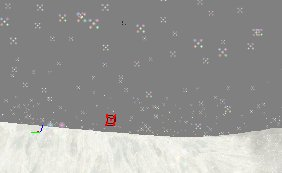
さらに、これらの雪片は真っ直ぐに落下しています｡雪は本来、落下する際少々渦を巻くものです｡このような効果を作成するには、以下のようにテクスチャを作成します：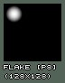
テクスチャは全体に黒で、その角に小さな白いフレークがあります｡その理由は：このテクスチャを落下させながら中心で回転させると、フレークが渦巻いているように見えるのです｡このため、初めに [Texture] （テクスチャ） で SpriteEmitter (スプライト エミッタ) にこのテクスチャを割り当てます｡ 次に [Rotation] （回転） でSpinParticles （スピン パーティクル） を True （真） に設定し、次に SpinsPerSecondRange （スピン/秒の範囲） でX（最低）を 0.5、X（最高）を 0.75 に設定します｡また DampRotation （制動回転） は [True] （真） に、 RotationDampingFactorRange （制動ファクタ範囲の回転） ではすべてを ０ にします。これは、雪片を地面の上に留めるためにコリジョンを使うと、回転する代わりに静かに横たわったままになるためです｡
 スピンの代わりに使用するものとしては、常に動きループするムーバーにエミッタを付加する方法があります｡２つまたはそれ以上のエミッタが必要で、すべて違った方向に動いている必要があります｡さもないと、すべてのフレークが同じ動きになります｡
もしテレインにビルがある場合、雪は屋上を通過してしまいます！コリジョンを使ってこれを解決します：
スピンの代わりに使用するものとしては、常に動きループするムーバーにエミッタを付加する方法があります｡２つまたはそれ以上のエミッタが必要で、すべて違った方向に動いている必要があります｡さもないと、すべてのフレークが同じ動きになります｡
もしテレインにビルがある場合、雪は屋上を通過してしまいます！コリジョンを使ってこれを解決します： UseCollision （衝突を使用） を True （真） 設定し、 DampingFactorRange （制動ファクタ範囲） ではすべてを 0 に設定します｡これにより雪は地面または屋上に少しの間静止した状態で留まります。
 パフォーマンスが思わしくない状態で、雪の量を増やしたり、より大きなマップを雪で満たそうとする場合、パフォーマンスは急激に低下します｡解決のヒントがいくつかあります：
地面を通過している雪片がないことを確認してください：雪片が地面に落ちた瞬間に消え去ることを確認します｡すべてのパーティクルは地下ではプレーヤーから見えず、システム リソースのみを利用しています｡ LifeTime は十分に短く設定しますが、短すぎると雪片は空中で消えてしまいます｡ランダムな落下速度を使うと、空中で消える雪片と地面で消える雪片を選択しなくてはならなくなります｡
パーティクルのテクスチャ上にひとつ以上のフレークを乗せることが出来ます｡ただし、これは余り効果がありません｡描く必要は同じくらいあり、パフォーマンスはパーティクルの数で決まるわけではなく、パーティクル自身のマスクされていない部分のサイズによるためです｡
エミッタを低く配置するとパーティクルも低く作成され、マップの高い部分（プレーヤーが飛ばない限り来れない場所）にはフレークが必要でなくなります｡このようにすると、マップ内にパーティクルの数が少なくなります｡エミッタをプレーヤーについて回るようにすることも出来ます｡こうするとパーティクルはプレーヤーのいる位置にのみ存在しますが、プレーヤーには遠くのパーティクルはもともと余り見えません｡
マップに複数の部分があり、ひとつの部分から他が見えない場合は各部分に異なるエミッタを使い、プレーヤーがそれらを見ない場合はエミッタを必ず非アクティブにします（[Tick] プロパティでこれを行います）。雪を作成するにはパーティクルを使う以外の方法もありますが（非ソリッド ブラシをパンする、フレーク テクスチャのウェーブなど）、これは余り見栄えがよくありません｡
マップに余り大きすぎない屋外領域があるか、小さめの屋外領域が複数ある場合、または雪に屋根の穴を通過させたい場合は、パーティクル システムを使うと最も見栄えのする ３D の雪を作成できます｡
または、このようなテクスチャを使ってフレークを作ることも出来ます：
パフォーマンスが思わしくない状態で、雪の量を増やしたり、より大きなマップを雪で満たそうとする場合、パフォーマンスは急激に低下します｡解決のヒントがいくつかあります：
地面を通過している雪片がないことを確認してください：雪片が地面に落ちた瞬間に消え去ることを確認します｡すべてのパーティクルは地下ではプレーヤーから見えず、システム リソースのみを利用しています｡ LifeTime は十分に短く設定しますが、短すぎると雪片は空中で消えてしまいます｡ランダムな落下速度を使うと、空中で消える雪片と地面で消える雪片を選択しなくてはならなくなります｡
パーティクルのテクスチャ上にひとつ以上のフレークを乗せることが出来ます｡ただし、これは余り効果がありません｡描く必要は同じくらいあり、パフォーマンスはパーティクルの数で決まるわけではなく、パーティクル自身のマスクされていない部分のサイズによるためです｡
エミッタを低く配置するとパーティクルも低く作成され、マップの高い部分（プレーヤーが飛ばない限り来れない場所）にはフレークが必要でなくなります｡このようにすると、マップ内にパーティクルの数が少なくなります｡エミッタをプレーヤーについて回るようにすることも出来ます｡こうするとパーティクルはプレーヤーのいる位置にのみ存在しますが、プレーヤーには遠くのパーティクルはもともと余り見えません｡
マップに複数の部分があり、ひとつの部分から他が見えない場合は各部分に異なるエミッタを使い、プレーヤーがそれらを見ない場合はエミッタを必ず非アクティブにします（[Tick] プロパティでこれを行います）。雪を作成するにはパーティクルを使う以外の方法もありますが（非ソリッド ブラシをパンする、フレーク テクスチャのウェーブなど）、これは余り見栄えがよくありません｡
マップに余り大きすぎない屋外領域があるか、小さめの屋外領域が複数ある場合、または雪に屋根の穴を通過させたい場合は、パーティクル システムを使うと最も見栄えのする ３D の雪を作成できます｡
または、このようなテクスチャを使ってフレークを作ることも出来ます：
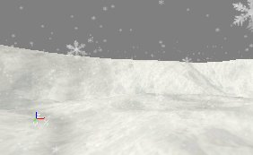
嵐
マップ:PR-Storm （v3323 ではロード不可）
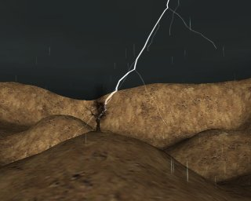
このマップには雨、稲妻、稲妻が落ちて煙を上げる木があります｡霧や雷の音もあります｡稲妻は BeamEmitter (ビーム エミッタ) によって作成されました｡このような稲妻の好き嫌いは各人の好みによります。雨
雨は雪と似ていますが、パーティクルはずっと早く動きます｡ SpriteEmitter (スプライト エミッタ) をマップの中心の特定の高さで追加します。Velocity （速度） ->でZ（最低）および Z（最高）を -10000 に設定します｡ Location （場所） -> StartVelocityRange （速度範囲の開始） では、値を雪と同様に設定します｡速度がとても速いため、 LifeTimeRange （ライフタイム範囲） はとても短く（エミッタの高さによる）、マップ用例では 0.2 になっています。
テクスチャを下の絵のように設定します｡ドロップは逆さまに配置します。こうしておかないと後でおかしく見えます｡
 ひとつのパーティクルにより多くのドロップを乗せるために、テクスチャにひとつ以上のドロップを乗せても、テクスチャが大きくなるためパフォーマンスは向上しません｡マップ用例では、General （概要） の
ひとつのパーティクルにより多くのドロップを乗せるために、テクスチャにひとつ以上のドロップを乗せても、テクスチャが大きくなるためパフォーマンスは向上しません｡マップ用例では、General （概要） の MaxParticles （パーティクル最高数） は 2000 に設定されています。16384x16384 のマップではこれくらい少ないパーティクルが効果的で、パフォーマンスも大変良くなります｡
スプライトで UseDirectionAs （使用する方向性） を PTDU_Up に設定します: これをしないと、見上げた場合に雨だれは回転し、水平のストライプが落ちてくるように見えます｡ PTDU_Up を設定すると、雨だれは常に垂直になります｡
Size （サイズ） -> StartSizeRange （サイズ範囲の開始） で X（最低）と X（最高）を 3 に設定し、Y（最低）と Y（最高）を 50 にします。こうすると雨だれは長く細くなり、雨脚の速い本物の雨のように見えます｡
 より良いパフォーマンスについては、雪の場合もこれと同じです｡
より良いパフォーマンスについては、雪の場合もこれと同じです｡
稲妻
このマップの稲妻は、BeamEmitter のBeamNoise （ビーム ノイズ） と BeamBranching （ビーム ブランチング） を使ってランダムなシェイプに作成されています｡
マップの中央、非ソリッド エリア内で出来るだけ高い位置に BeamEmitter を追加します｡このエミッタ内で、２つの BeamEmitter （ひとつはメイン ビームに、もう一方はブランチに）と、ひとつの SpriteEmitter （稲妻効果のため）を追加します｡
BeamEmitter は双方共にスクリーンショットにテクスチャがあり、 DrawStyle （描画スタイル） = DSPT_Brighten です（これは 777 では機能しないかもしれません）。完全に白いテクスチャでも出来るかもしれませんが、スクリーンショットのようなテクスチャではエッジがより柔らかく見えます｡
 次に、一番目のビームのみ（BeamEmitter[0]）、Beam:
次に、一番目のビームのみ（BeamEmitter[0]）、Beam: BeamDistance （ビーム距離） = を 4000、 DeterminateEndPointBy （終点を決定） = PTEP_TraceOffSet に設定し、Velocity （速度） -> StartVelocityRange （速度範囲の開始） で Z = を -1 とします。これにより稲妻は真っ直ぐ底まで伸び、エミッタ アクタは地上 4000 ユニットよりも下にあると推定します｡稲妻の終点が常に地面になるのは、DeterminateEndPointBy でそのように設定されているためです｡
BeamNoise で例えば 30 HighFrequencyPoints （高周波数ポイント） そして 10 LowFrequencyPoints （低周波ポイント）、 HighFrequencyNoiseRange では X（最低）および Y（最低）= を -50、X（最高）および Y（最高）= を 50、 LowFrequencyNoiseRange X（最低）および Y（最低）= を -200、そして X（最低）および Y（最高）= を 200 とします。ブランチをスポーンするには、十分な FrequencyPoints （周波数ポイント） が必要です｡
[Color] （カラー）で UseColorScale （カラースケールを使用） を[True] （真） に設定し、 ColorScale （カラースケール） 内で黒を RelativeTime （相対時間） = 0 に、白を RelativeTime （相対時間） = 1 にし、=ColorScaleRepeats= （カラースケール繰り返し） を例えば３にします。
[Local] （ローカル） では bRespawnDeadParticles を False （偽） に設定し、[Spawning] （スポーニング） では AutomaticInitialSpawning （自動初期スポーニング） を False （偽） に、 InitialParitclesPerSecond は ２ とします。 [General] （概要） では MaxParticles （パーティクル最高数） を ２ に、[Time] （時間） では LifeTimeRange （ライフタイム範囲） 最低および最高を 0.5 とします。この設定のコンビネーションにより、0.5 秒生きてまた続いて 0.5 秒間生きる稲妻がスポーンされます。これは合計で １ 秒生きる稲妻がひとつ、0.5 秒後に形を変えることになります。
BeamBranching （ビーム ブランチング） で UseBranching （ブランチングを使用） と LinkUpLifetime （ライフタイムのリンクアップ） を True （真）に、 BranchEmitter = 1 とします（はじめに BeamEmitter[1] がブランチに使用するものであることを確認します）。 BranchProbability （ブランチ プロバビリティ） では最低を = 0 および最高を = １ とし、 BranchSpawnAmountRange （範囲内でのブランチ スポーン） 最低 = 1 および最高 = 2 とします。
次に、[Beam] （ビーム） の BeamEmitter[1] で BeamDistance （ビーム距離） を例えば最低 = 500 そして最高 = 1000、 DeterminateEndPointBy （終点を決定） を PTEP_Distance に、そして Velocity -> StartVelocityRange （速度範囲の開始） X(最低)、Y(最低)、Z(最低) = -1 および X(最高)、Y(最高)、Z(最高) を1に設定します｡これにより、ブランチはランダムの方向を向きます｡ Size -> StartSizeRange （サイズ範囲の開始） で 30 に設定すると、ブランチはメインの幹よりもずっと細くなります｡
BeamNoise (ビームノイズ) では 10 HighFrequencyPoints と 5 LowFrequencyPoints （低周波ポイント） があり、 HighFrequencyNoiseRange では X と Y(最低) = -20 および X と Y(最高) = 20、そして LowFrequencyRange X と Y(最低) = -100 そして X と Y(最高) = 100 とします。 [Color] （カラー） では、 ColorScale （カラースケール） はメインの幹と全く同じです｡
ここでも同じく、 bRespawnDeadParticles と AutomaticIinitialSpawning は False （偽）に設定し、[General] （全般）では MaxParticles （パーティクル最高数
） を 20 など、希望するブランチの数に設定します｡
雲の上のライティング効果については、SpriteEmitter (スプライト エミッタ) を下のようなテクスチャと共にエミッタの内部で使用します：
 ここでも同じく、
ここでも同じく、 bRespawnDeadParticles と AutomaticInitialSpawning （自動初期スポーニング） を False （偽） に設定します｡ [General] （全般） では MaxParticles （パーティクル最高数） を １ に、[Time] （タイム） では LifeTimeRange （ライフタイム範囲） を１にします。 [Color] では ColorScale （カラースケール） をライティングと同じに設定し、 ColorScaleRepeats （カラースケール繰り返し） は ３ ではなく ６ にします。これはこのパーティクルはライティング パーティクルよりも ２ 倍の時間生き続けるためです｡
[Sprite] （スプライト） では UseDirectionAs （使用する方向性） を PTDU_Normal に設定し、 ProjectionNormal （投影ノーマル） ではZ = 1 であることを確認します｡テクスチャのサイズは、例えば X と Y 方向双方で 1500 に設定します｡
最後に、稲妻の配置をランダムにするために、[Global] （グローバル） でエミッタ AutoReset = True （真） とし、 GlobalOffsetRange （グローバル オフセット範囲） では例えば X(最低) と Y(最低) = を -5000 に、そして X(最高) と Y(最高) = 5000 とします。ただし、これはマップのサイズによります｡ TimeTillResetRange （リセットまでの時間範囲） で最低 = 1 と 最高 = 2 とし、２ つの稲妻の間に間合いを置くことも出来ます｡
木を直撃する稲妻
エミッタは通常の稲妻に用いられたものと全く同じですが、BeamEndPoint (ビーム終点)だけが違います｡ ここではDeterminateEndPointBy （終点を決定） は PTEP_Actor に設定され、=ActorTag= （アクタ タグ） に木の Tag （タグ） が追加された BeamEndPoint が加わっています｡
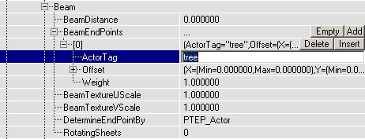
また、[Global] ではGlobalOffsetRange （グローバル オフセット範囲） は他のエミッタよりも繊細で、このため稲妻はより木に近い場所から始まります｡
木から上がる煙
木は稲妻に打たれたため、少し燃えて煙が上がっています｡この煙は炎とほぼ同じですが、少々小さくなります｡詳細については「火｣の項の最後をご覧ください｡雷
雷のサウンドは ２ つの TimedTriggers （時間設定トリガ） によって発生し、各々が SpecialEvent (スペシャル イベント) をトリガします｡これらの SpecialEvent は雷のサウンドを持ち、bPlayersPlaySoundEffect を True （真） に設定しておけば、SpecialEvent からどんなに離れていてもサウンドが再生されます｡各 TimedTrigger (時間設定トリガ) は bRepeating に設定し、DelaySeconds (遅延秒数) は各 TimedTrigger （時間設定トリガ） で異なる設定にします｡これによりバリエーションが生まれます｡ 注：v3323 には TimedTrigger または SpecialEvent トリガがないため、別の方法を使う必要があります｡滝
マップ:PT-Falls
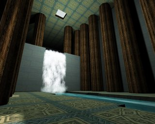
マップ用例には２つのエミッタがあります：ひとつは滝のため、もうひとつは滝の落下地点に上がる霧のためです。滝の作成例
滝を作成するには、実際に滝となるものの上に SpriteEmitter を追加し、２ つの土手の間に配置します｡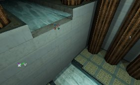
SpriteEmitter に以下と類似したテクスチャを持たせます｡ [Sprite] （スプライト） で
[Sprite] （スプライト） で UseDirectionAs （使用する方向性） を PTDU_Up に設定し、カメラをどのように回転させてもテクスチャが常に地面に向くようにします｡
Size -> StartSizeRange （サイズ範囲の開始） では、Y 値を例えば Y(最低) = 200 と Y(最高) = 400 というように、 100 よりも大きく設定します｡滝は Y 方向にテクスチャが伸びていた方がずっと見栄えが良くなります｡
エミッタ アクタ自体のプロパティ内、[Advanced] （詳細） で bDirectional を True （真） に設定すると、エディタ内に矢印が表示されます｡回転ツールをマウスの右ボタンと共に使い、矢印が川の流れる方向を向くまでエミッタを回転させます｡さもないと [Velocity] （速度） と [StartLocationRange] （配置範囲の開始） に正確な X と Y の値が必要になりますが、矢印が実際にこの方向を向く際、エミッタの X 軸の方向が川の流れの方向になってしまいます｡次に [Rotation] （回転） で UseRotationFrom （回転の開始位置） を PTRS_Actor に設定します｡こうして初めて軸が回転されます｡
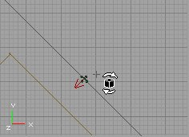
Location ->StartLocationRange （配置範囲の開始） で Y(最低) を -## に、Y(最高)を +## に設定し、## をこの方法で選択して滝に川と同じ幅を持たせます｡ [Acceleration] （加速度） に Z の負の値を入れ（-900 が実際の引力に近い値です）、Velocity -> StartVelocityRange （速度範囲の開始） では正の X の値を入れます｡これにより滝を希望のシェイプ、例えば岸壁や山と同じシェイプにすることが出来ます｡次に [Time] （タイム）で LifeTime と設定し、滝の水が川の低い場所に到達するのと同時に収束するようにします｡ [General] （全般） では MaxParticles （パーティクル最高数） に十分に高い値を入力し、滝に十分なパーティクルがあるようにします｡マップ用例ではこの値は 200 です。これらすべては、作成する滝の長さ、幅、速度などによります｡
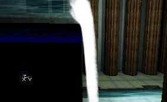
 必要に応じて、上部の川の終端を出来る限り滝で隠すことも出来ます｡
必要に応じて、上部の川の終端を出来る限り滝で隠すことも出来ます｡

霧
霧のために SpriteEmitter をもうひとつ、滝の真下に追加します｡下のはじめの写真のような感触のテクスチャを与えます｡これは ２ 番目の写真が極めて暗くなったものです｡とても暗くなっていますが、たくさん集まると明るく見えます｡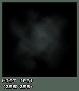
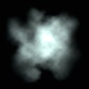
Location ->StartLocationRange （配置範囲の開始） で、Y(最低) と Y(最高) に滝で SpriteEmitter に入力したのと同様の値を入力します｡X(最低) と X(最高)には異なる値を入力し、霧にボリュームを与えます｡ Velocity -> StartVelocityRange （速度範囲の開始） ではZ(最低) と Z(最高)に +150 程度の値を入力し、霧がゆっくりと立ち上るようにします｡ LifeTime は ３ 程度、または霧をより高く立ち上らせたい場合はそれ以上の値を設定します｡ MaxParticles （パーティクル最高数） を設定し、霧が十分に明るく見えるようにしますが、これは霧のサイズによります｡マップ用例では 150 です。
エフェクトをよりクールにするには、テクスチャをスピンさせます｡ [Rotation] （回転）で SpinParticles （スピン パーティクル） を True （真） にし、 SpinsPerSecondRange （スピン/秒の範囲） では X の値を 0.5 程度にします｡マップ用例では、X(最低) = 0 で、 X(最高) = 0.5 です。
StartSizeRange （サイズ範囲の開始） では X(最低) を 100 に、X(最高) を 200 に設定します。さもないとパーティクルは小さすぎますが、これによりサイズがランダムになります。
この効果が気に入った場合は、最後に FadeOut （フェードアウト） にすることもできます。
 このマップ用例では、ビル内部の滝を示しています｡ CraterRiver23.unr のマップでは、とてもクールな屋外の滝を示しています｡
このマップ用例では、ビル内部の滝を示しています｡ CraterRiver23.unr のマップでは、とてもクールな屋外の滝を示しています｡
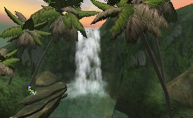
火
マップ:PT-Fire
 火はたったひとつの ParticleEmitter (パーティクル エミッタ) で作れますが、より大きく見栄えの良い火は 3 つかそれ以上必要です（すべてをひとつのエミッタ内に入れることが出来ます）：煙にひとつ、火の粉にひとつ、炎に後ひとつかそれ以上いります｡マップ用例の大きな火は４つの ParticleEmitter を使っており、ライティングには従来のライト アクタを使っています｡壁には松明がいくつかありますが、これらにはひとつしか使われていません｡
火はたったひとつの ParticleEmitter (パーティクル エミッタ) で作れますが、より大きく見栄えの良い火は 3 つかそれ以上必要です（すべてをひとつのエミッタ内に入れることが出来ます）：煙にひとつ、火の粉にひとつ、炎に後ひとつかそれ以上いります｡マップ用例の大きな火は４つの ParticleEmitter を使っており、ライティングには従来のライト アクタを使っています｡壁には松明がいくつかありますが、これらにはひとつしか使われていません｡
松明
まず松明から始めましょう｡作成は一番簡単です｡はじめに松明ブラシのてっぺんに SpriteEmitter を加えます： はじめの写真のようなテクスチャを与えます｡炎は、PSP または PhotoShop で使うとても柔らかいブラシで描くドットで作成した、ほぼどんなテクスチャでもうまく作成できます｡この同じテクスチャは大きな火とそこから上がる煙にも使用できます｡とても暗いテクスチャで、２番目の写真はこれが明るかった場合の例です｡これらの暗いテクスチャ多数を１つにして使うと、松明の炎がボリュームを持った見栄えの良いものになります｡
はじめの写真のようなテクスチャを与えます｡炎は、PSP または PhotoShop で使うとても柔らかいブラシで描くドットで作成した、ほぼどんなテクスチャでもうまく作成できます｡この同じテクスチャは大きな火とそこから上がる煙にも使用できます｡とても暗いテクスチャで、２番目の写真はこれが明るかった場合の例です｡これらの暗いテクスチャ多数を１つにして使うと、松明の炎がボリュームを持った見栄えの良いものになります｡

 以下のプロパティを次のように設定します:
以下のプロパティを次のように設定します: StartSizeRange （サイズ範囲の開始） 最低 と 最高 = 20、 MaxParticles （パーティクル最高数） = 50、 LifeTimeRange （ライフタイム範囲） 最低 と 最高 = 1、 StartVelocity -> Z(最低) および Z(最高) = 100。または松明のサイズに応じてこれ以外の値を使います｡
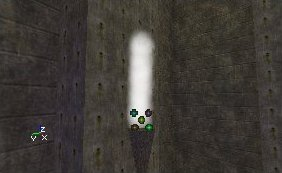
より炎らしく見せるには、SizeScale を追加します： UseSizeScale を True （真）に、 UseRegularSizeScale （標準サイズ スケールの使用） を False（偽） に、新しい SizeScale を RelativeSize （相対サイズ） = 0 および RelativeTime （相対時間） = 1 で追加します｡次に、炎のてっぺんをより良くするため、=FadeOut= （フェードアウト） を True （真） にし、 FadeOutStartTime （フェードアウト開始時間） を 0 のままにします。
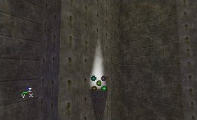
ここでStartLocationRange （配置範囲の開始） X(最低) = -10 に、X(最高) = +10、Y(最低) = -10 および Y(最高) = +10 に設定すると、このようになります:
 炎に色をつけるには、
炎に色をつけるには、 ColorScale （カラースケール） をこのように使います： FadeOut (フェードアウト) に関わらず紫を十分見えるようにするには、5 ColorScaleRepeats （カラースケール繰り返し） が必要です｡

 同じ炎を持つ松明を複数作成するには、エミッタを数回複製します：
同じ炎を持つ松明を複数作成するには、エミッタを数回複製します：

大きな火
大きな火には、ひとつのエミッタ内に ４ つの ParticleEmitter (パーティクル エミッタ) があります： ひとつは煙に、ひとつは火の粉に、あとふたつは炎に使います｡はじめの炎は一番目のスクリーンショット、ふたつ目の炎は二番目のスクリーンショット、そしてふたつ一緒になると三番目のスクリーンショットのようになります｡
ひとつは煙に、ひとつは火の粉に、あとふたつは炎に使います｡はじめの炎は一番目のスクリーンショット、ふたつ目の炎は二番目のスクリーンショット、そしてふたつ一緒になると三番目のスクリーンショットのようになります｡

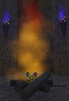
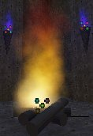
はじめの炎は以下のプロパティを持ちます： [Color] では、ColorScale (カラー スケール) は次のようです：
FadeOut （フェードアウト） = True （真）、 FadeOutStartTime （フェードアウト開始時間） = 0、=MaxParticles= （パーティクル最高数） = 150、 StartLocationRange （配置範囲の開始） --> X(最低) = -30、X(最高) = 30、Y(最低) = -30、Y(最高) = 30。 StartSizeRange （サイズ範囲の開始） --> X(最低)= 30、X(最高) = 30、そして SizeScale は次のようです:
 テクスチャは松明のものと同じです｡
テクスチャは松明のものと同じです｡ LifeTimeRange -> X(最低) = X(最高) = 1.5、 StartVelocityRange （速度範囲の開始） --> X(最低) = 100、X(最高) = 100。
２ 番目の炎には:
[Color] では、ColorScale は次のようになります：
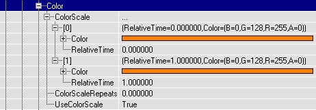
これはつまり、色は常に同じですがFadeOut （フェードアウト） があるため、実際には色が変わることを意味します：赤のチャンネルが最後にフェードアウトするため（色彩には赤の成分が一番多く含まれるため）、最後に炎は赤くなります｡
FadeOut （フェードアウト） = True （真）、 FadeOutStartTime （フェードアウト開始時間） = 0、 MaxParticles （パーティクル最高数） = 50、 StartLocationRange （配置範囲の開始） -> X(最低) = -30、X(最高) = 30、Y(最低) = -30、Y(最高) = 30。 StartSizeRange （サイズ範囲の開始） -> X(最低) = 30、X(最高) = 30。この炎には SizeScale がありません。
LifeTimeRange -> X(最低) = X(最高) = 2、 StartVelocityRange （速度範囲の開始） -> X(最低) = 100、X(最高) = 100 で、ここでも同じテクスチャが使われています｡
煙
煙は炎ととてもよく似ています。SizeScale がここでは煙を小さくする代わりに大きくし、色が違います｡
マップ用例では、次のようなプロパティになっています：
FadeIn （フェードイン） = True （真）、 FadeInEndTime （フェードイン収束時間） = 1、 FadeOut （フェードアウト） = True （真）、 FadeOutStartTime （フェードアウト開始時間） = 4、 MaxParticles （パーティクル最高数） = 30、 StartLocationRange （配置範囲の開始） -> X(最低) = -50、X(最高) = 50、Y(最低) = -50、 Y(最高) = 50、 SpinParticles （スピン パーティクル） = True （真）、 SpinsPerSecondRange （スピン/秒の範囲） -> X(最低) = 0、X(最高) = 0.5。Size -> StartSizeRange （サイズ範囲の開始） -> X(最低) = 20 および X(最高) = 20 で、スクリーンショットのような SizeScale を持ちます: RelativeSize （相対サイズ） は 10 です。
 ここでもテクスチャは炎と松明と同じで、テクスチャの
ここでもテクスチャは炎と松明と同じで、テクスチャの DrawStyle （描画スタイル） は PTDS_Darken に設定されています：これにより煙が黒くなります｡ LifeTimeRange （ライフタイム範囲） = 6、そして Velocity -> Z(最低) = Z(最高) = 200 です。 LifeTime が長いため煙はかなり高く上がり、屋根に作られた穴へと消えていきます｡
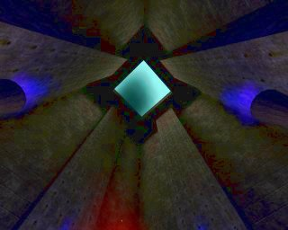
火の粉
これはエミッタ内の ４ 番目かつ最後の SpriteEmitter で、火の粉を作成します：小さな燃える点で、空中を飛び回ります｡Acceleration （加速度） では Z = -1000 で、これにより火の粉が消え行く瞬間に再度少々落ちるようにします。カラースケールは次のようです：

FadeOut （フェードアウト） = True （真）で、これにより火の粉は最後にゆっくりと燃え尽きます｡ MaxParticles （パーティクル最高数） = 8 で、これ以上は必要ありません｡実際の火には火の粉は多くはないものです。 StartLocationRange （配置範囲の開始） -> X(最低) = -20、X(最高) = 20、Y(最低) = -20、Y(最高) = 20。テクスチャには小さくて鋭い、不揃いな形の円が使われており、 StartSizeRange （サイズ範囲の開始） は １ でこれにより火の粉を十分に小さくしています｡

DrawStyle （描画スタイル） = PTDS_Brighten で、これにより火の粉は少々明るくなっています｡ LifeTimeRange （ライフタイム範囲） = 2 です。 StartVelocityRange （速度範囲の開始） -> X(最低) = -100、X(最高) = 100、Y(最低) = -100、Y(最高) = 100、Z(最低) = 500、Z(最高) = 600 です。
ライティング
火と松明のためには、さらにライティングのエフェクトが追加されています：松明にはLightEffect （ライト効果） LE_TorchWaver に小さく青いライトがあり、火には LightEffect （ライト効果） LE_FireWaver に大きく黄色いライトがあります｡これにはライト アクタは追加されていませんが、エミッタがライトを与えるよう作成されています：エミッタ プロパティ -> Lighting で LightType （ライト タイプ） を LT_Steady と設定し、 LightRadius （ライト半径） を与え、 LightColor （ライト カラー） で色を加えるとエミッタそのものがライトを与えます｡ v3323 ではライト エフェクト LE_FireWaver は使われていません｡代わりにプロジェクタを使うか、他のライト タイプやエフェクトで代用してください｡
SpotLight (スポットライト)
マップ:PT-Light
 このマップでは、各スポットはエミッタを
このマップでは、各スポットはエミッタを LightEffect （ライト効果） LE_SpotLight と共に使用しています｡また SpriteEmitter を使うことで、ボリュームのあるライティング エフェクトを生み出しています｡
まずエミッタを加え、プロパティを開いて [Advanced] （詳細） で bDirectional を True （真） にします。次に回転ツールを使ってこれを回転し、矢印がスポットライトが照らす方向を向くようにします｡
 この回転にはふたつ目的があります：
この回転にはふたつ目的があります： LightEffect （ライト効果） LE_SpotLight ではスポットライトの方向を決めるため、 SpriteEmitter ではこれによりパーティクルが進む方向を決めるのが容易にするためです｡
エミッタで SpriteEmitter を加え、はじめの写真のようなテクスチャを加えます｡これは二番目の写真がとても暗くなったものです：このように暗いテクスチャが多く集まると、とてもスムーズなライトコーンを生み出します｡

 このテクスチャは白なので、どのような色の SpotLight にも使えます：ただ
このテクスチャは白なので、どのような色の SpotLight にも使えます：ただ ColorScale （カラースケール） を加えるだけです｡例えば、緑の場合は次のようにします：
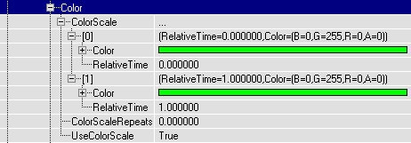
見てのとおり、Color[0] と Color[1] は同じです：パーティクルはLifeTime の初めから終わりまでこの色になります｡
FadeOut （フェードアウト） = True （真） と FadeOutStartTime （フェードアウト開始時間） = 0 で、ボリュームのあるライティングを最後に柔らかく消え入るようにします｡ MaxParticles （パーティクル最高数） = 20 (これは SpotLight のサイズによる)、 StartSizeRange （サイズ範囲の開始） -> X(最低) および X(最高) = 50 (これも SpotLight のサイズによる)に設定します｡ [Rotation] （回転） で UseRotationFrom （回転の開始位置） を PTRS_Actor に設定し、エミッタ アクタの回転によって軸も回転するようにします｡これはとても重要です：さもないと、速度の正確な方向を設定するのがとても難しくなります｡ SizeScale を次のようにします：
 この
この SizeScale により、パーティクルは前へ進みながら光り、LightCone (ライト コーン) が作られます｡もし光らない場合は、ライト シリンダになります。 LifeTimeRange （ライフタイム範囲） = 2 ですが、ここでもこれは SpotLight のサイズによります｡ StartVelocityRange （速度範囲の開始） -> X(最低) および X(最高) = 100 にします。 UseRotationFrom（回転の開始位置） =PTRS_Actor でエミッタを正確な方向へ回転したため、パーティクルは SpotLight の方向へ移動し、見栄えの良い LightCone が作成されます｡
 ライティング効果：エミッタのプロパティを開き、Lighting ->
ライティング効果：エミッタのプロパティを開き、Lighting -> LightColor （ライト カラー） でパーティクルの ColorScale （カラースケール） と同じ色をライトに選びます｡次に[Lighting] （ライティング） へ行き LightType （ライト タイプ） を LT_Steady に、 LightEffect （ライト効果） を LE_SpotLight に、 LightRadius （ライト半径） を 128 またはマップのサイズに応じて適当な数値を入力します｡次に LightCone を 64、または希望の LightEffect （ライト効果） に応じた数値を入力します：この数値が高いほど、床に当たるライトが大きくなります｡例えば、はじめのスクリーンショットでは LightCone は 13 で、2 番目のスクリーンショットでは 255 です。ボリュームのあるライティング効果に照らし合わせて、適切な数値を設定します｡

 色や方向の異なるひとつ以上のライトに効果を加えるには、エミッタを複製して新たに色と方向を設定します｡
色や方向の異なるひとつ以上のライトに効果を加えるには、エミッタを複製して新たに色と方向を設定します｡
壊れるガラス
マップ:PT-Break (739 バージョンはロードしますが、コンテンツに足りない部分があります)


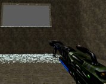
このマップではムーバーが窓となり、これを撃つとムーバーが身をかわし、同時に BreakingGlassEmitter (ガラス片エミッタ) をスポーンするスポーン物をトリガします｡この BreakingGlassEmitter は SpriteEmitter にいくつかのプロパティが設定されたものに過ぎません｡ここでは撃つと窓のすべてが破壊されますが、もしこれを一部分だけにしたい場合は、窓を他のムーバーから遠ざけ、それぞれにスポーナーを割り当てるなどします｡ マップに武器はありませんが、コンソールでloaded と入力すれば武器を追加でき、窓を撃つことが出来ます｡
まずはじめに窓の中央に SpriteEmitter を加えます｡後でここに BreakingGlassEmitter をスポーンする物を加えますが、今ここでエミッタを使ってこれを行った方が、エディタ内でプレビューできるので簡単です｡ SpriteEmitter スプライト エミッタのプロパティを開きます｡
マップ用例では、テクスチャに SubdivisionScale （区分スケール） が使われています｡テクスチャは 2 x 2 に区分されています：

TextureUSubdivisions （テクスチャU区分） と TextureVSubdivisions （テクスチャV区分） は ２ に設定され、 UseRandomSubdivision （ランダム区分の使用） = True （真） です。これで破片はすべて同じでなくなります｡窓を複数の色にするには、この方法で破片に異なる色彩を与えます｡また、 StartSizeRange （サイズ範囲の開始） -> X(最低) = 1 および X(最高) = 10 で、サイズにバリエーションを与えます｡
破片に動きを与えるには、[Acceleration] （加速度） と [Velocity] （速度） を使います｡方向と軸を操作して例と同じような作用を窓に与えるには、詳細で bDirectional を真に設定して破片を移動させたい方向へ矢印を回転させ、 UseRotationFrom （回転の開始位置） を PTRS_Actor に設定します｡
Acceleration -> Z = -950 として、破片を落下させます｡ StartVelocityRange （速度範囲の開始） -> X(最低) = -20、 X(最高) = 200 とします。これによりすべての破片は窓の片方の側に落下します｡もう片方へも落下させたい場合は、X(最低) = -200 とします。 [Velocity] の値が高ければ高いほど、破片はより前方へと飛び散るので、ビル内部などで起こる大きな爆発を表現する場合は破片により速い速度を与えます｡ StartVelocityRange （速度範囲の開始） -> Y(最低) = -100、Y(最高) = 100:これで破片は両脇よりも少し遠くへ落下し、地面に落下した際に単調な矩形を描かなくなります｡
パーティクルのスポーンには：多くのパーティクルが必要で、窓の内部でほぼ一時にスポーンされる必要があります｡後からそれ以上新しいパーティクルが現れないようにします｡この設定は MaxParticles （パーティクル最高数） = 5000 としますが、窓が大きい場合はもっと必要です｡パーティクルはとても小さいため、パフォーマンスは負担の多いものになりません｡
StartLocationRange （配置範囲の開始） -> Y(最低) = -256、Y(最高) = 256、Z(最低) = -128、Z(最高) = 128。これは窓のサイズが 512x256 で、エミッタが中心にある場合を想定しています｡
[Spawning] (スポーニング） で AutomaticInitialSpawning （自動初期スポーニング） = False （偽） とし、 InitialParticlesPerSecond （初期パーティクル/秒） = 50000 そして ParticlesParSecond = 0 とします。これで SpriteEmitter は１秒に 50000 パーティクル作成しようとしますが、 MaxParticles （パーティクル最高数） = 10000 となっているため 10000 パーティクルしか作成されません｡またこれは 0.2 秒後に発生し、パーティクルはほぼ同時スポーンされたように見えます｡
LifeTime = 10000000、 RespawnDeadParticles = False（偽）とし、エミッタの [Global] （グローバル） で bAutoDestroy = True （真） とします。 これでパーティクルは 10000000 秒生き続け、消え去った後には再度スポーンされず、エミッタ アクタは破壊されます｡実際にはこれらのことは起こりません｡プレーヤーが 10000000 秒待つと、プレーヤーは 115 日損したことになるためです｡ただし、例えば LifeTime を 20 秒とすると、破片はしばらく後に消え去り、パフォーマンスも回復します｡
[Collision] （衝突）を True （真） に設定して、バウンスする破片が地面に留まるようにします（さもないと床を突き抜けてしまいます）。 DampingFactorRange （制動ファクタ範囲）= の X、Y、Zすべてに １ よりも低い値を入力します。パーティクルはこれらすべての方向に速度または加速度を持つため、これをしないとパーティクルは永久に動き続けます｡X(最低) = 0.8、X(最高) = 0.9、Y(最低)、Y(最高) = 0.5そして Z(最低) = 0.2、Z(最高) = 0.3 とするのが適当でしょう｡
これでエミッタはマップを開いた際に破片を発しますが、その後はもう発しません｡プレーヤーが窓を撃った際に、このエミッタをすべてのプロパティを用いてスポーンしたい場合は、エミッタの新しいサブクラスを作成します｡名前は例えば 「BreakingGlassEmitter」 (ガラス片エミッタ) とし、マップにはこのクラスを追加しません。代わりに [Actor Class Browser] （アクタ クラス ブラウザ） のデフォルトのプロパティを開きます｡これらのデフォルト プロパティは BreakingGlassEmitter がスポーンされる際に使われる値なので、たった今作成したエミッタ（窓に配置したもの）のプロパティをこれにコピーします｡
これを簡単に行うには、まず窓のエミッタのプロパティを開き、SpriteEmitter の名前をコピーします｡次に BreakingGlassEmitter クラスのデフォルト プロパティにペーストすると、窓のエミッタと同じプロパティがすべて揃います｡
class BreakingGlassSpawner extends Emitter;
function trigger(actor Other, pawn EventInstigator)
{
Spawn(class'mylevel.BreakingGlassEmitter');
}
この短いスクリプトは、もちろん完璧ではありません｡
この BreakingGlassSpawner を窓の中心に加え（エミッタが配置されていた箇所）、「glass」などのタグを与えます｡マップ用例にはふたつの新しいクラスがあることになります：スポーンされる BreakingGlassEmitter と、トリガされる際に BreakingGlassEmitter をスポーンする BreakingGlassSpawner です。
ここで窓にムーバーを配置します｡これは撃たれる前のガラスを表します｡このムーバーの Key1 をマップの外のどこかへ設定し、ムーバーのプロパティで bDamageTriggered = True （真）、 MoveTime = 0、 bTriggerOnceOnly = True とし、[Object] （オブジェクト） で InitialState （初期状態） = TriggerOpenTimed とし、[Event] （イベント） では [Event] を BreakingGlassSpawner のタグである「glass」に設定します｡
電気
マップ:PT-Elec
 このマップの中心には、電気の火花を周囲に飛び散らせた大きな球体が浮かんでいます｡これは BeamEmitter により作成されたもので、あらゆる方向へビームを作り出します｡ BeamEmitter は球体の中心に配置され、これは部屋の中心にもなっています｡
ビームにはスクリーンショットのようなテクスチャがあり、
このマップの中心には、電気の火花を周囲に飛び散らせた大きな球体が浮かんでいます｡これは BeamEmitter により作成されたもので、あらゆる方向へビームを作り出します｡ BeamEmitter は球体の中心に配置され、これは部屋の中心にもなっています｡
ビームにはスクリーンショットのようなテクスチャがあり、 DrawStyle （描画スタイル） PTDS_Brighten です。
Beam -> DeterminateEndPointBy （終点を決定） = PTEP_Distance 、 BeamDistanceRange （ビーム距離の範囲） = 886 (これはビームに必要な長さでほぼ最長のものです: 1024x1024 の部屋の中央から部屋の角までの距離）
BeamNoise (ビームノイズ) -> HighFrequencyPoints （高周波数ポイント） = 5、 FrequencyNoiseRange （周波数ノイズ範囲） -> X(最低) = -100、X(最高) = 100、Y(最低) = -100、Y(最高) = 100 とします。ビームを青くし、ちかちか光る効果を与えるには、次のような ColorScale （カラースケール） にします：

MaxParticles （パーティクル最高数） = 100、 StartSizeRange （サイズ範囲の開始） -> X(最低) と X(最高) = 20、 LifeTimeRange （ライフタイム範囲） -> 最低 = 2、最高 = 4 です。
StartVelocityRange （速度範囲の開始） で X(最低) = -1、X(最高) = 1、Y(最低) = -1、Y(最高) = 1、Z(最低) = -1、Z(最高) = 1 とします。ここで１の値が使われていても問題ではありません｡ビームの長さは BeamDistance (ビーム距離) によって決められているためです｡ここで唯一重要なのは値の符号です｡
LightEffect （ライト効果） LE_FastWave の青いライトと、電子音が追加されました｡
源泉
マップ:PT-Fountain
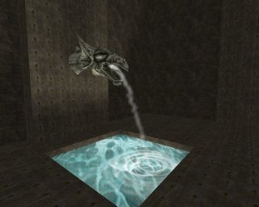
岸壁には小さな源泉があり、水が小さな溜まり場に落下してしぶきを上げています｡源泉の作成例
エミッタは源泉が始まる場所に配置されています：竜の頭の中です｡ SpotLight (スポットライト) マップのライトと同じテクスチャを持ちます。左の写真は実際のテクスチャ、右の写真は明るいバージョンです｡
必要に応じて bDirectional を True （真）に設定し、エミッタを回転して矢印が水が流れる方向を指すようにします（ただし矢印は水平に保ちます）。=UseRotationFrom= （回転の開始位置） を PTRS_Actor に設定します｡
少量の水が飛び出しているので、 StartSizeRange （サイズ範囲の開始） -> X(最低- = X(最高) = 15 にします。 Acceleration -> Z = -300、 StartVelocityRange （速度範囲の開始） -> X(最低) = -100、X(最高) = -90、Y(最低) = -5、Y(最高) = 5、 MaxParticles （パーティクル最高数） = 50、 LifeTime = 1.2 とします。これらすべてはもちろん源泉のサイズ、高さなどによります｡滝の場合と比較してみると良いでしょう｡
丸い形の源泉にしたい場合は、次のような問題があります： StartVelocityRange （速度範囲の開始） X(最低) = -100、 X(最高) = 100、Y(最低) = -100、Y(最高) = 100 にして作成しますが、形は四角になってしまいます｡エミッタの [Total Velocity] （トータル速度） の最高値をもし設定できれば、円形を描くことが出来ます｡部屋の隅へ飛ぶパーティクルを他の方角へ飛ぶものほど速く飛ばないように出来るためです（これにより四角の角を削除することが出来ます）。下の写真は上および横の角度から見たものです：


水しぶきの作成例
このエミッタは、光を発するためにSizeScale を使う水紋をスポーンします。源泉の水が水溜りの表面に到達する地点にエミッタを配置します｡下のようなテクスチャを与えます：
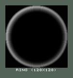
[Sprite] （スプライト）でUseDirectionAs （使用する方向性） を PTDU_Normal に設定し、 ProjectionNormal （投影ノーマル） では X と Y が 0 で Z = 1 であることを確認します｡これにより水紋が水平になります。
[Size] （サイズ） では次のように設定します：
 パーティクルのサイズは 10 から始まり、
パーティクルのサイズは 10 から始まり、 LifeTime の間にさらに10倍に大きくなります｡ StartSizeRange （サイズ範囲の開始） では Xおよび Y の値が使われます。 UseDirectionAs （使用する方向性） は PTDU_Normal で、なおかつここでは X および Y の値を独立して設定する必要があるためです｡
MaxParticles （パーティクル最高数） = 20 で LifeTimeRange （ライフタイム範囲） = 5 です。 Velocity （速度） または Acceleration （加速度） はまったくありません。水紋は光り輝きながらその位置に留まるためです｡水紋をランダムな位置から移動させるには、 StartLocationRange （配置範囲の開始） X(最低) = -20、X(最高) = 20、Y(最低) = -20、Y(最高) = 20 とします。また FadeOut （フェードアウト） = True（真）および FadeOutStartTime （フェードアウト開始時間） = 0 とすると水紋は光り輝きながら徐々に不可視になり、実際の水しぶきでの様子を再現します｡
これで水面に水紋ができました。
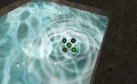
ウィアード
マップ:PT-Weird (739 でのみ、v3323 ではロードしません)
このマップは再度作成され、近日利用可能になります｡その他雑多な効果、例えばマチネのパスや SparkEmitter (スパークエミッタ) に沿って移動するエミッタなどが含まれる予定です｡